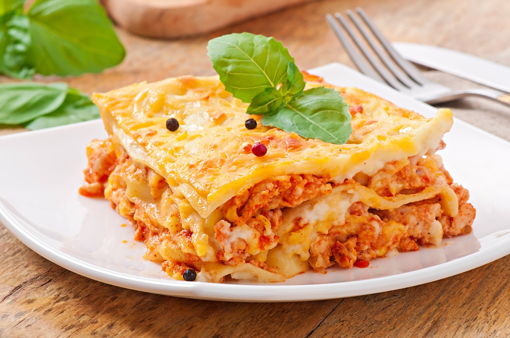

Lasagna

Description
Lasagna is the name of one of the oldest and best-known pasta shapes.
It is usually rectangular or ribbon shaped, thicker than tagliatelle, made from a dough based on flour and eggs,
with numerous local variants.
After being boiled, the rectangular lasagna
noodles are drained and placed in layers with a filling that varies based on different local traditions.
Ingredients
- 9 lasagna noodles
- 1/4 pounds bulk Italian sausage
- 3/4 pound ground beef
- 1 medium onion, diced
- 3 garlic cloves, minced
- 2 cans (one 28 ounces, one 15 ounces) crushed tomatoes
- 2 cans (6 ounces each) tomato paste
- 2/3 cup water
- 2 to 3 tablespoons sugar
- 3 tablespoons plus 1/4 cup minced fresh parsley, divided
- 2 teaspoons dried basil
- 3/4 teaspoon fennel seed
- 3/4 teaspoon salt, divided
- 1/4 teaspoon coarsely ground pepper
- 1 large egg, lightly beaten
- 1 carton (15 ounces) ricotta cheese
- 4 cups shredded part-skim mozzarella cheese
- 3/4 cup grated Parmesan cheese
Steps
- Spread a thin layer of pasta sauce in the bottom of a baking dish.
- Make a layer of cooked lasagna noodles.
- Spread an even layer of the ricotta cheese mixture.
- Spread an even layer of meat sauce.
- Repeat those layers two times.
- Top it with a final layer of noodles, sauce, mozzarella, and parmesan cheese.